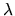
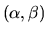
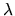
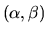

In this section, we give a brief discussion of singular matrix pairs (A,B).
If the determinant of  is zero for all values of 
(or the determinant of
is zero for all
),
the pair (A,B) is said to be singular.
The eigenvalue problem of a singular pair is much more complicated
than for a regular pair.
is zero for all values of 
(or the determinant of
is zero for all
),
the pair (A,B) is said to be singular.
The eigenvalue problem of a singular pair is much more complicated
than for a regular pair.
Consider for example the singular pair
It is possible for a pair (A,B) in Schur form to be very close to singular,
and so have very sensitive eigenvalues, even if no diagonal entries of
A or B are small.
It suffices, for example, for A and B to nearly have a common null space
(though this condition is not necessary).
For example, consider the 16-by-16 matrices
A complete understanding of the structure of a singular eigenproblem (A,B) requires a study of its Kronecker canonical form, a generalization of the Jordan canonical form. In addition to Jordan blocks for finite and infinite eigenvalues, the Kronecker form can contain ``singular blocks'', which occur only if for all (or if A and B are nonsquare). See [53,93,105,97,29] for more details. Other numerical software, called GUPTRI, is available for computing a generalization of the Schur canonical form for singular eigenproblems [30,31].
The error bounds discussed in this guide hold for regular pairs only (they become unbounded, or otherwise provide no information, when (A,B) is close to singular). If a (nearly) singular pencil is reported by the software discussed in this guide, then a further study of the matrix pencil should be conducted, in order to determine whether meaningful results have been computed.